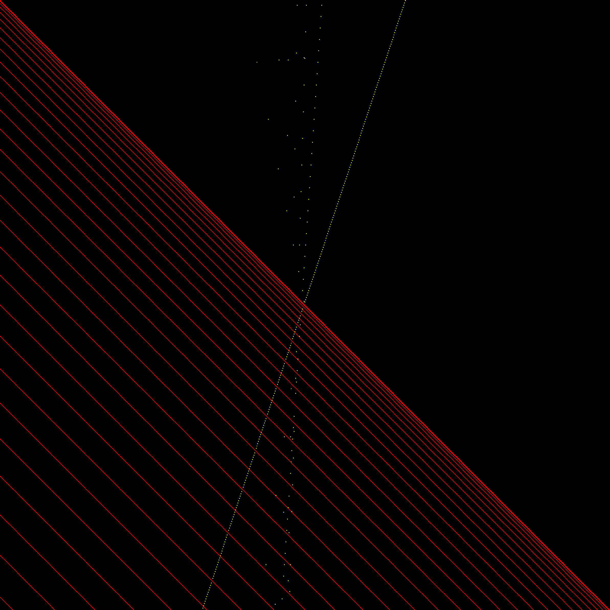

Things that have come up in my comps (senior capstone) project.
Some background: We write a monic quadratic polynomial in the form \( f(x) = (x-\gamma)^2 + \gamma + m \). Then the second iterate of \( f \) is \( f^2(x) = f(f(x)) = ((x-\gamma)^2 + \gamma + m)^2 + \gamma + m \), the third iterate is \( f^3(x) = f(f(f(x))) \), et cetera. A polynomial is reducible (over \( \mathbb{Q} \)) if it factors into two or more (non-constant) polynomials with rational coefficients. For example, \( x^2-1 = (x+1)(x-1) \) is reducible, while \(x^2-2\) is irreducible: its only possible factorization is \( x^2-2=(x+\sqrt{2})(x-\sqrt{2})\), and these polynomials don't have rational coefficients.
Now that we know about iterates and irreducibility, we can put them together! It's easy to see that if \(f^n(x)\) is reducible for some \(n\), then \(f^{n+m}(x)\) is also reducible for all \(m>0\):
If \(f^n(x)=p(x)q(x)\), then \(f^{n+1}(x)=p(f(x))q(f(x))\), \(f^{n+2}(x)=p(f^2(x))q(f^2(x))\), et cetera. But it turns out we can't go the other direction: some polynomials are irreducible, but eventually their iterates become reducible! For instance, \(f(x)=x^2-\frac{3}{4}\) is irreducible, but \( f^2(x)=(x^2-2x+\frac{2}{3})(x^2+2x+\frac{2}{3}) \).
The main goal of my comps is to investigate these newly reducible iterates. Some questions we've explored are:
Is there some quadratic polynomial \(f(x)\) with newly reducible \(n^{\mbox{th}}\) iterate for every integer \(n?\)
For \(n\) such that \(f(x)\) with newly reducible \(n^{\mbox{th}}\) iterate do exist, are there infinitely many?
If there are infinitely many, can we find them all?
Reducible \( f, f^2, \) and \( f^3 \)

This image visualizes when the iterates of monic quadratic polynomials are reducible.
In this image, each point represents an integer polynomial \( f(x) = (x-\gamma)^2 + \gamma + m \), with \( -400 \le m \le 400 \) on the horizontal axis and \( -400 \le \gamma \le 400 \) on the vertical axis. A point corresponding to \( f \) is colored red if \( f \) is reducible, otherwise yellow if \( f^2 \) is reducible, otherwise white if \( f^3 \) is reducible. If none of these are reducible, it's colored black. One thing to note is that newly reducible \( f^n \) get more rare as \( n \) gets larger; there are only two points in this image corresponding to newly reducible \( f^3 \), and nobody yet knows if there are any newly reducible \( f^n \) for \( n \ge 4 \).
Conic Projection
This is an animation of a rational projection onto a conic in projective space \( \textbf{RP}^2 \). For a conic in \( \mathbb{R}^2 \) (the plane), if we find one point with rational coordinates then we can find infinitely many more by using projection (see section 1 here). However, the first rational point doesn't actually have to be in \( \mathbb{R}^2 \); here we use a point at infinity, which is really just a direction in \( \mathbb{R}^2 \). In this video the diagonal black line is the point at infinity, the moving black line is the line we project through, and the red line is where the plane determined by the two black lines intersects the conic. With a rational parameter, the intersection of the red line and the plane \( z = 1 \) will be a rational point!
For an introduction to projective geometry, see here.